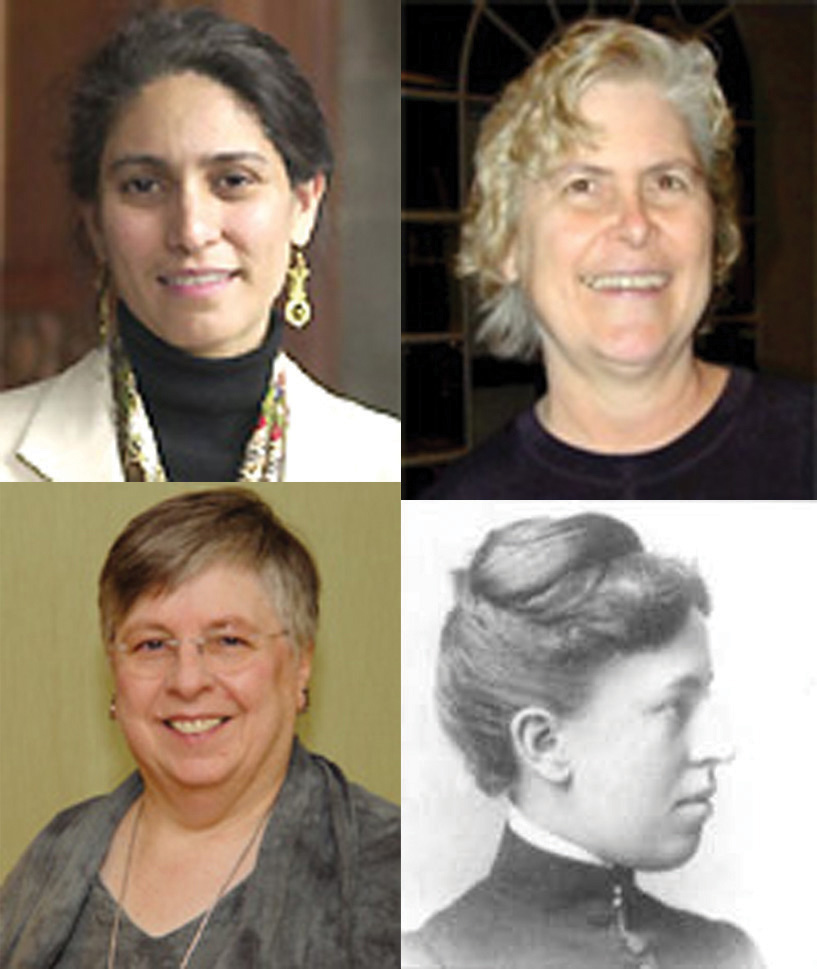
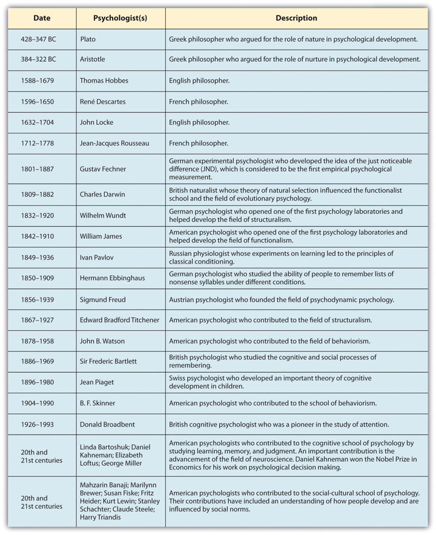
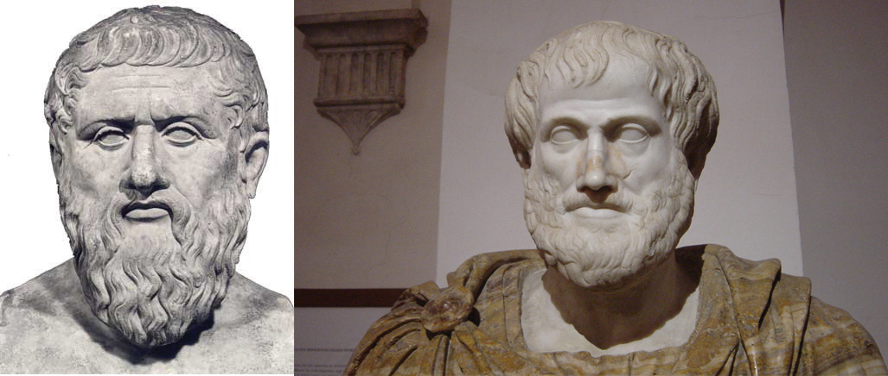
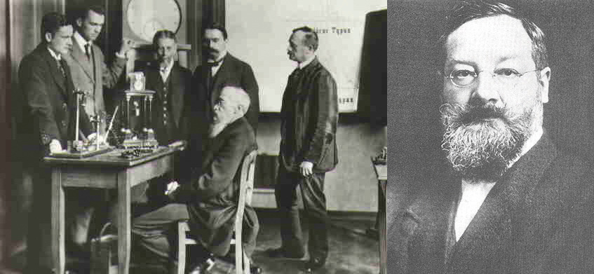
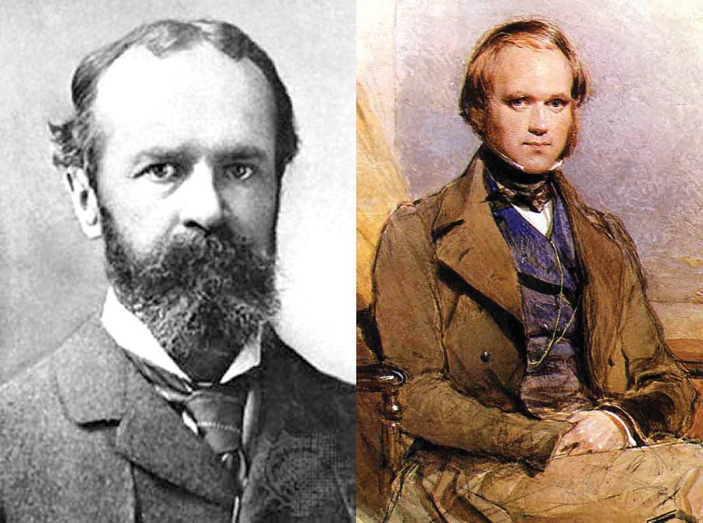
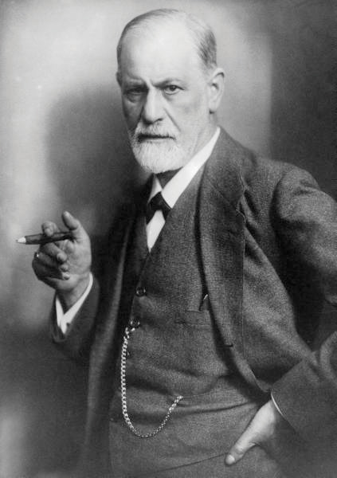
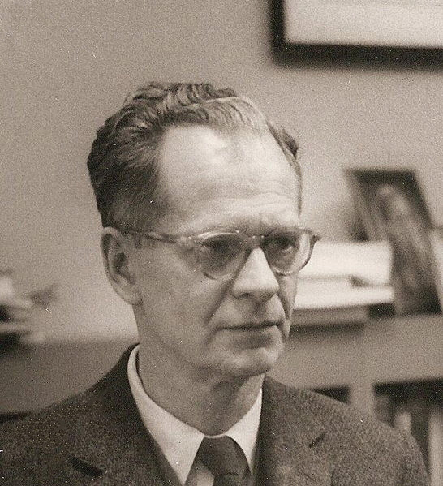
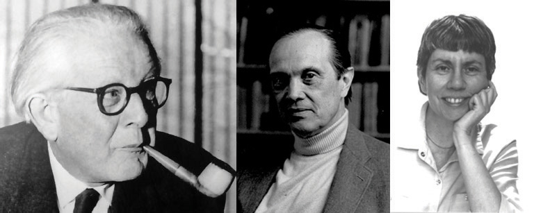

In this section we will review the history of psychology with a focus on the important questions that psychologists ask and the major approaches (or schools) of psychological inquiry. The schools of psychology that we will review are summarized in Table 1.2 "The Most Important Approaches (Schools) of Psychology", and Figure 1.5 "Timeline Showing Some of the Most Important Psychologists" presents a timeline of some of the most important psychologists, beginning with the early Greek philosophers and extending to the present day. Table 1.2 "The Most Important Approaches (Schools) of Psychology" and Figure 1.5 "Timeline Showing Some of the Most Important Psychologists" both represent a selection of the most important schools and people; to mention all the approaches and all the psychologists who have contributed to the field is not possible in one chapter.
The approaches that psychologists have used to assess the issues that interest them have changed dramatically over the history of psychology. Perhaps most importantly, the field has moved steadily from speculation about behavior toward a more objective and scientific approach as the technology available to study human behavior has improved (Benjamin & Baker, 2004).Benjamin, L. T., Jr., & Baker, D. B. (2004). From seance to science: A history of the profession of psychology in America. Belmont, CA: Wadsworth/Thomson. There has also been an increasing influx of women into the field. Although most early psychologists were men, now most psychologists, including the presidents of the most important psychological organizations, are women.
Table 1.2 The Most Important Approaches (Schools) of Psychology
| School of psychology | Description | Important contributors |
|---|---|---|
| Structuralism | Uses the method of introspection to identify the basic elements or “structures” of psychological experience | Wilhelm Wundt, Edward B. Titchener |
| Functionalism | Attempts to understand why animals and humans have developed the particular psychological aspects that they currently possess | William James |
| Psychodynamic | Focuses on the role of our unconscious thoughts, feelings, and memories and our early childhood experiences in determining behavior | Sigmund Freud, Carl Jung, Alfred Adler, Erik Erickson |
| Behaviorism | Based on the premise that it is not possible to objectively study the mind, and therefore that psychologists should limit their attention to the study of behavior itself | John B. Watson, B. F. Skinner |
| Cognitive | The study of mental processes, including perception, thinking, memory, and judgments | Hermann Ebbinghaus, Sir Frederic Bartlett, Jean Piaget |
| Social-cultural | The study of how the social situations and the cultures in which people find themselves influence thinking and behavior | Fritz Heider, Leon Festinger, Stanley Schachter |
Figure 1.4 Female Psychologists
Although most of the earliest psychologists were men, women are increasingly contributing to psychology. The first female president of the American Psychological Association was Mary Whiton Calkins (1861–1930; lower right). Calkins made significant contributions to the study of memory and the self-concept. Mahzarin Banaji (upper left), Marilynn Brewer (upper right), and Linda Bartoshuk (lower left) all have been recent presidents of the American Psychological Society.
Sources: Bartoshuk photo courtesy of Linda Bartoshuk, http://www.psychologicalscience.org/?s=bartoshuk. Banaji photo courtesy of Mahzarin Rustum Banaji, http://banaji.socialpsychology.org. Brewer photo courtesy of Marilynn Brewer, http://brewer.socialpsychology.org. Calkins photo courtesy of Vlad Sfichi, http://www.flickr.com/photos/24110800@N08/2779490726.
Figure 1.5 Timeline Showing Some of the Most Important Psychologists
Although it cannot capture every important psychologist, this timeline shows some of the most important contributors to the history of psychology.
Although psychology has changed dramatically over its history, the most important questions that psychologists address have remained constant. Some of these questions follow, and we will discuss them both in this chapter and in the chapters to come:
Figure 1.6
President Barack Obama and Vice President Joe Biden (left photo) meet with BP executives to discuss the disastrous oil spill in the Gulf of Mexico (right photo). Psychologists study the causes of poor judgments such as those made by these executives.
Sources: Obama-Hayward photo courtesy of Pete Souza, http://commons.wikimedia.org/wiki/File:Obama-hayward.jpg. Pelican photo courtesy of the International Bird Rescue Research Center, http://commons.wikimedia.org/wiki/File:Pelican_wash_from_oil_spill_Louisiana_13_Dawn_ IBRRC_2010.05.04_B6X2141.jpg.
The earliest psychologists that we know about are the Greek philosophers Plato (428–347 BC) and Aristotle (384–322 BC). These philosophers asked many of the same questions that today’s psychologists ask; for instance, they questioned the distinction between nature and nurture and the existence of free will. In terms of the former, Plato argued on the nature side, believing that certain kinds of knowledge are innate or inborn, whereas Aristotle was more on the nurture side, believing that each child is born as an “empty slate” (in Latin a tabula rasa) and that knowledge is primarily acquired through learning and experience.
Figure 1.7
The earliest psychologists were the Greek philosophers Plato (left) and Aristotle. Plato believed that much knowledge was innate, whereas Aristotle thought that each child was born as an “empty slate” and that knowledge was primarily acquired through learning and experience.
Sources: Plato photo courtesy of http://commons.wikimedia.org/wiki/File:Platon2.jpg. Aristotle photo courtesy of Giovanni Dall'Orto, http://commons.wikimedia.org/wiki/File:Busto_di_Aristotele_conservato_a_Palazzo_Altaemps, _Roma._Foto_di_Giovanni_Dall%27Orto.jpg.
European philosophers continued to ask these fundamental questions during the Renaissance. For instance, the French philosopher René Descartes (1596–1650) also considered the issue of free will, arguing in its favor and believing that the mind controls the body through the pineal gland in the brain (an idea that made some sense at the time but was later proved incorrect). Descartes also believed in the existence of innate natural abilities. A scientist as well as a philosopher, Descartes dissected animals and was among the first to understand that the nerves controlled the muscles. He also addressed the relationship between mind (the mental aspects of life) and body (the physical aspects of life). Descartes believed in the principle of dualism: that the mind is fundamentally different from the mechanical body. Other European philosophers, including Thomas Hobbes (1588–1679), John Locke (1632–1704), and Jean-Jacques Rousseau (1712–1778), also weighed in on these issues.
The fundamental problem that these philosophers faced was that they had few methods for settling their claims. Most philosophers didn’t conduct any research on these questions, in part because they didn’t yet know how to do it, and in part because they weren’t sure it was even possible to objectively study human experience. But dramatic changes came during the 1800s with the help of the first two research psychologists: the German psychologist Wilhelm Wundt (1832–1920), who developed a psychology laboratory in Leipzig, Germany, and the American psychologist William James (1842–1910), who founded a psychology laboratory at Harvard University.
Wundt’s research in his laboratory in Liepzig focused on the nature of consciousness itself. Wundt and his students believed that it was possible to analyze the basic elements of the mind and to classify our conscious experiences scientifically. Wundt began the field known as structuralismA school of psychology whose goal was to identify the basic elements (or “structures”) of psychological experience., a school of psychology whose goal was to identify the basic elements or “structures” of psychological experience. Its goal was to create a “periodic table” of the “elements of sensations,” similar to the periodic table of elements that had recently been created in chemistry.
Structuralists used the method of introspection to attempt to create a map of the elements of consciousness. IntrospectionA method of learning about psychological processes in which research participants are asked to describe exactly what they experience as they work on mental tasks. involves asking research participants to describe exactly what they experience as they work on mental tasks, such as viewing colors, reading a page in a book, or performing a math problem. A participant who is reading a book might report, for instance, that he saw some black and colored straight and curved marks on a white background. In other studies the structuralists used newly invented reaction time instruments to systematically assess not only what the participants were thinking but how long it took them to do so. Wundt discovered that it took people longer to report what sound they had just heard than to simply respond that they had heard the sound. These studies marked the first time researchers realized that there is a difference between the sensation of a stimulus and the perception of that stimulus, and the idea of using reaction times to study mental events has now become a mainstay of cognitive psychology.
Figure 1.8
Wilhelm Wundt (seated at left) and Edward Titchener (right) helped create the structuralist school of psychology. Their goal was to classify the elements of sensation through introspection.
Sources: Wundt photo courtesy of Kenosis, http://commons.wikimedia.org/wiki/File:Wundt-research-group.jpg. Titchener photo courtesy of Amaro Studios, http://www.flickr.com/photos/39584782@N08/4197763373.
Perhaps the best known of the structuralists was Edward Bradford Titchener (1867–1927). Titchener was a student of Wundt who came to the United States in the late 1800s and founded a laboratory at Cornell University. In his research using introspection, Titchener and his students claimed to have identified more than 40,000 sensations, including those relating to vision, hearing, and taste.
An important aspect of the structuralist approach was that it was rigorous and scientific. The research marked the beginning of psychology as a science, because it demonstrated that mental events could be quantified. But the structuralists also discovered the limitations of introspection. Even highly trained research participants were often unable to report on their subjective experiences. When the participants were asked to do simple math problems, they could easily do them, but they could not easily answer how they did them. Thus the structuralists were the first to realize the importance of unconscious processes—that many important aspects of human psychology occur outside our conscious awareness, and that psychologists cannot expect research participants to be able to accurately report on all of their experiences.
In contrast to Wundt, who attempted to understand the nature of consciousness, the goal of William James and the other members of the school of functionalismA school of psychology whose goal was to understand why animals and humans have developed the particular psychological aspects that they currently possess. was to understand why animals and humans have developed the particular psychological aspects that they currently possess (Hunt, 1993).Hunt, M. (1993). The story of psychology. New York, NY: Anchor Books. For James, one’s thinking was relevant only to one’s behavior. As he put it in his psychology textbook, “My thinking is first and last and always for the sake of my doing” (James, 1890).James, W. (1890). The principles of psychology. New York, NY: Dover.
James and the other members of the functionalist school were influenced by Charles Darwin’s (1809–1882) theory of natural selection, which proposed that the physical characteristics of animals and humans evolved because they were useful, or functional. The functionalists believed that Darwin’s theory applied to psychological characteristics too. Just as some animals have developed strong muscles to allow them to run fast, the human brain, so functionalists thought, must have adapted to serve a particular function in human experience.
Figure 1.9
The functionalist school of psychology, founded by the American psychologist William James (left), was influenced by the work of Charles Darwin.
Source: James photo courtesy of http://commons.wikimedia.org/wiki/File:William_James,_philosopher.jpg. Darwin portrait courtesy of George Richmond, http://commons.wikimedia.org/wiki/File:Charles_Darwin_by_G._Richmond.jpg.
Although functionalism no longer exists as a school of psychology, its basic principles have been absorbed into psychology and continue to influence it in many ways. The work of the functionalists has developed into the field of evolutionary psychologyA branch of psychology that applies the Darwinian theory of natural selection to human and animal behavior., a branch of psychology that applies the Darwinian theory of natural selection to human and animal behavior (Dennett, 1995; Tooby & Cosmides, 1992).Dennett, D. (1995). Darwin’s dangerous idea: Evolution and the meanings of life. New York, NY: Simon and Schuster; Tooby, J., & Cosmides, L. (1992). The psychological foundations of culture. In J. H. Barkow & L. Cosmides (Eds.), The adapted mind: Evolutionary psychology and the generation of culture (p. 666). New York, NY: Oxford University Press. Evolutionary psychology accepts the functionalists’ basic assumption, namely that many human psychological systems, including memory, emotion, and personality, serve key adaptive functions. As we will see in the chapters to come, evolutionary psychologists use evolutionary theory to understand many different behaviors including romantic attraction, stereotypes and prejudice, and even the causes of many psychological disorders.
A key component of the ideas of evolutionary psychology is fitness. FitnessThe extent to which having a given genetic characteristic helps an individual organism survive and reproduce at a higher rate than do other members of the species who do not have the characteristic. refers to the extent to which having a given characteristic helps the individual organism survive and reproduce at a higher rate than do other members of the species who do not have the characteristic. Fitter organisms pass on their genes more successfully to later generations, making the characteristics that produce fitness more likely to become part of the organism’s nature than characteristics that do not produce fitness. For example, it has been argued that the emotion of jealousy has survived over time in men because men who experience jealousy are more fit than men who do not. According to this idea, the experience of jealously leads men to be more likely to protect their mates and guard against rivals, which increases their reproductive success (Buss, 2000).Buss, D. M. (2000). The dangerous passion: Why jealousy is as necessary as love and sex. New York, NY: Free Press.
Despite its importance in psychological theorizing, evolutionary psychology also has some limitations. One problem is that many of its predictions are extremely difficult to test. Unlike the fossils that are used to learn about the physical evolution of species, we cannot know which psychological characteristics our ancestors possessed or did not possess; we can only make guesses about this. Because it is difficult to directly test evolutionary theories, it is always possible that the explanations we apply are made up after the fact to account for observed data (Gould & Lewontin, 1979).Gould, S. J., & Lewontin, R. C. (1979). The spandrels of San Marco and the Panglossian paradigm: A critique of the adaptationist programme. In Proceedings of the Royal Society of London (Series B, Vol. 205, pp. 581–598). Nevertheless, the evolutionary approach is important to psychology because it provides logical explanations for why we have many psychological characteristics.
Perhaps the school of psychology that is most familiar to the general public is the psychodynamic approach to understanding behavior, which was championed by Sigmund Freud (1856–1939) and his followers. Psychodynamic psychologyAn approach to understanding human behavior that focuses on the role of unconscious thoughts, feelings, and memories. is an approach to understanding human behavior that focuses on the role of unconscious thoughts, feelings, and memories. Freud developed his theories about behavior through extensive analysis of the patients that he treated in his private clinical practice. Freud believed that many of the problems that his patients experienced, including anxiety, depression, and sexual dysfunction, were the result of the effects of painful childhood experiences that the person could no longer remember.
Figure 1.10
Sigmund Freud and the other psychodynamic psychologists believed that many of our thoughts and emotions are unconscious. Psychotherapy was designed to help patients recover and confront their “lost” memories.
Source: Photo courtesy of Max Halberstadt, http://commons.wikimedia.org/wiki/File:Sigmund_Freud_LIFE.jpg.
Freud’s ideas were extended by other psychologists whom he influenced, including Carl Jung (1875–1961), Alfred Adler (1870–1937), Karen Horney (1855–1952), and Erik Erikson (1902–1994). These and others who follow the psychodynamic approach believe that it is possible to help the patient if the unconscious drives can be remembered, particularly through a deep and thorough exploration of the person’s early sexual experiences and current sexual desires. These explorations are revealed through talk therapy and dream analysis, in a process called psychoanalysis.
The founders of the school of psychodynamics were primarily practitioners who worked with individuals to help them understand and confront their psychological symptoms. Although they did not conduct much research on their ideas, and although later, more sophisticated tests of their theories have not always supported their proposals, psychodynamics has nevertheless had substantial impact on the field of psychology, and indeed on thinking about human behavior more generally (Moore & Fine, 1995).Moore, B. E., & Fine, B. D. (1995). Psychoanalysis: The major concepts. New Haven, CT: Yale University Press. The importance of the unconscious in human behavior, the idea that early childhood experiences are critical, and the concept of therapy as a way of improving human lives are all ideas that are derived from the psychodynamic approach and that remain central to psychology.
Although they differed in approach, both structuralism and functionalism were essentially studies of the mind. The psychologists associated with the school of behaviorism, on the other hand, were reacting in part to the difficulties psychologists encountered when they tried to use introspection to understand behavior. BehaviorismA school of psychology that is based on the premise that it is not possible to objectively study the mind, and therefore that psychologists should limit their attention to the study of behavior itself. is a school of psychology that is based on the premise that it is not possible to objectively study the mind, and therefore that psychologists should limit their attention to the study of behavior itself. Behaviorists believe that the human mind is a “black box” into which stimuli are sent and from which responses are received. They argue that there is no point in trying to determine what happens in the box because we can successfully predict behavior without knowing what happens inside the mind. Furthermore, behaviorists believe that it is possible to develop laws of learning that can explain all behaviors.
The first behaviorist was the American psychologist John B. Watson (1878–1958). Watson was influenced in large part by the work of the Russian physiologist Ivan Pavlov (1849–1936), who had discovered that dogs would salivate at the sound of a tone that had previously been associated with the presentation of food. Watson and the other behaviorists began to use these ideas to explain how events that people and other organisms experienced in their environment (stimuli) could produce specific behaviors (responses). For instance, in Pavlov’s research the stimulus (either the food or, after learning, the tone) would produce the response of salivation in the dogs.
In his research Watson found that systematically exposing a child to fearful stimuli in the presence of objects that did not themselves elicit fear could lead the child to respond with a fearful behavior to the presence of the stimulus (Watson & Rayner, 1920; Beck, Levinson, & Irons, 2009).Watson, J. B., Rayner, R. (1920). Conditioned emotional reactions. Journal of Experimental Psychology, 3(1), 1–14; Beck, H. P., Levinson, S., & Irons, G. (2009). Finding Little Albert: A journey to John B. Watson’s infant laboratory. American Psychologist, 64(7), 605–614. In the best known of his studies, an 8-month-old boy named Little Albert was used as the subject. Here is a summary of the findings:
The boy was placed in the middle of a room; a white laboratory rat was placed near him and he was allowed to play with it. The child showed no fear of the rat. In later trials, the researchers made a loud sound behind Albert’s back by striking a steel bar with a hammer whenever the baby touched the rat. The child cried when he heard the noise. After several such pairings of the two stimuli, the child was again shown the rat. Now, however, he cried and tried to move away from the rat.
In line with the behaviorist approach, the boy had learned to associate the white rat with the loud noise, resulting in crying.
Figure 1.11
B. F. Skinner was a member of the behaviorist school of psychology. He argued that free will is an illusion and that all behavior is determined by environmental factors.
Source: Photo courtesy of http://commons.wikimedia.org/wiki/File:B.F._Skinner_at_Harvard_circa _1950.jpg.
The most famous behaviorist was Burrhus Frederick (B. F.) Skinner (1904–1990), who expanded the principles of behaviorism and also brought them to the attention of the public at large. Skinner used the ideas of stimulus and response, along with the application of rewards or reinforcements, to train pigeons and other animals. And he used the general principles of behaviorism to develop theories about how best to teach children and how to create societies that were peaceful and productive. Skinner even developed a method for studying thoughts and feelings using the behaviorist approach (Skinner, 1957, 1968, 1972).Skinner, B. (1957). Verbal behavior. Acton, MA: Copley; Skinner, B. (1968). The technology of teaching. New York, NY: Appleton-Century-Crofts; Skinner, B. (1972). Beyond freedom and dignity. New York, NY: Vintage Books.
The behaviorist research program had important implications for the fundamental questions about nature and nurture and about free will. In terms of the nature-nurture debate, the behaviorists agreed with the nurture approach, believing that we are shaped exclusively by our environments. They also argued that there is no free will, but rather that our behaviors are determined by the events that we have experienced in our past. In short, this approach argues that organisms, including humans, are a lot like puppets in a show who don’t realize that other people are controlling them. Furthermore, although we do not cause our own actions, we nevertheless believe that we do because we don’t realize all the influences acting on our behavior.
Recent research in psychology has suggested that Skinner and the behaviorists might well have been right, at least in the sense that we overestimate our own free will in responding to the events around us (Libet, 1985; Matsuhashi & Hallett, 2008; Wegner, 2002).Libet, B. (1985). Unconscious cerebral initiative and the role of conscious will in voluntary action. Behavioral and Brain Sciences, 8(4), 529–566; Matsuhashi, M., & Hallett, M. (2008). The timing of the conscious intention to move. European Journal of Neuroscience, 28(11), 2344–2351; Wegner, D. M. (2002). The illusion of conscious will. Cambridge, MA: MIT Press. In one demonstration of the misperception of our own free will, neuroscientists Soon, Brass, Heinze, and Haynes (2008)Soon, C. S., Brass, M., Heinze, H.-J., & Haynes, J.-D. (2008). Unconscious determinants of free decisions in the human brain. Nature Neuroscience, 11(5), 543–545. placed their research participants in a functional magnetic resonance imaging (fMRI) brain scanner while they presented them with a series of letters on a computer screen. The letter on the screen changed every one-half second. The participants were asked, whenever they decided to, to press either of two buttons. Then they were asked to indicate which letter was showing on the screen when they decided to press the button. The researchers analyzed the brain images to see if they could predict which of the two buttons the participant was going to press, even before the letter at which he or she had indicated the decision to press a button. Suggesting that the intention to act occurred in the brain before the research participants became aware of it, the researchers found that the prefrontal cortex region of the brain showed activation that could be used to predict the button press as long as 10 seconds before the participants said that they decided which button to press.
Research has found that we are more likely to think that we control our behavior when the desire to act occurs immediately prior to the outcome, when the thought is consistent with the outcome, and when there are no other apparent causes for the behavior. Aarts, Custers, and Wegner (2005)Aarts, H., Custers, R., & Wegner, D. M. (2005). On the inference of personal authorship: Enhancing experienced agency by priming effect information. Consciousness and Cognition: An International Journal, 14(3), 439–458. asked their research participants to control a rapidly moving square along with a computer that was also controlling the square independently. The participants pressed a button to stop the movement. When participants were exposed to words related to the location of the square just before they stopped its movement, they became more likely to think that they controlled the motion, even when it was actually the computer that stopped it. And Dijksterhuis, Preston, Wegner, and Aarts (2008)Dijksterhuis, A., Preston, J., Wegner, D. M., & Aarts, H. (2008). Effects of subliminal priming of self and God on self-attribution of authorship for events. Journal of Experimental Social Psychology, 44(1), 2–9. found that participants who had just been exposed to first-person singular pronouns, such as “I” and “me,” were more likely to believe that they controlled their actions than were people who had seen the words “computer” or “God.”
The idea that we are more likely to take ownership for our actions in some cases than in others is also seen in our attributions for success and failure. Because we normally expect that our behaviors will be met with success, when we are successful we easily believe that the success is the result of our own free will. When an action is met with failure, on the other hand, we are less likely to perceive this outcome as the result of our free will, and we are more likely to blame the outcome on luck or our teacher (Wegner, 2003).Wegner, D. M. (2003). The mind’s best trick: How we experience conscious will. Trends in Cognitive Sciences, 7(2), 65–69.
The behaviorists made substantial contributions to psychology by identifying the principles of learning. Although the behaviorists were incorrect in their beliefs that it was not possible to measure thoughts and feelings, their ideas provided new ideas that helped further our understanding regarding the nature-nurture debate as well as the question of free will. The ideas of behaviorism are fundamental to psychology and have been developed to help us better understand the role of prior experiences in a variety of areas of psychology.
Science is always influenced by the technology that surrounds it, and psychology is no exception. Thus it is no surprise that beginning in the 1960s, growing numbers of psychologists began to think about the brain and about human behavior in terms of the computer, which was being developed and becoming publicly available at that time. The analogy between the brain and the computer, although by no means perfect, provided part of the impetus for a new school of psychology called cognitive psychology. Cognitive psychologyA field of psychology that studies mental processes, including perception, thinking, memory, and judgment. is a field of psychology that studies mental processes, including perception, thinking, memory, and judgment. These actions correspond well to the processes that computers perform.
Although cognitive psychology began in earnest in the 1960s, earlier psychologists had also taken a cognitive orientation. Some of the important contributors to cognitive psychology include the German psychologist Hermann Ebbinghaus (1850–1909), who studied the ability of people to remember lists of words under different conditions, and the English psychologist Sir Frederic Bartlett (1886–1969), who studied the cognitive and social processes of remembering. Bartlett created short stories that were in some ways logical but also contained some very unusual and unexpected events. Bartlett discovered that people found it very difficult to recall the stories exactly, even after being allowed to study them repeatedly, and he hypothesized that the stories were difficult to remember because they did not fit the participants’ expectations about how stories should go. The idea that our memory is influenced by what we already know was also a major idea behind the cognitive-developmental stage model of Swiss psychologist Jean Piaget (1896–1980). Other important cognitive psychologists include Donald E. Broadbent (1926–1993), Daniel Kahneman (1934–), George Miller (1920–), Eleanor Rosch (1938–), and Amos Tversky (1937–1996).
The War of the Ghosts was a story used by Sir Frederic Bartlett to test the influence of prior expectations on memory. Bartlett found that even when his British research participants were allowed to read the story many times they still could not remember it well, and he believed this was because it did not fit with their prior knowledge.
One night two young men from Egulac went down to the river to hunt seals and while they were there it became foggy and calm. Then they heard war-cries, and they thought: “Maybe this is a war-party.” They escaped to the shore, and hid behind a log. Now canoes came up, and they heard the noise of paddles, and saw one canoe coming up to them. There were five men in the canoe, and they said:
“What do you think? We wish to take you along. We are going up the river to make war on the people.”
One of the young men said, “I have no arrows.”
“Arrows are in the canoe,” they said.
“I will not go along. I might be killed. My relatives do not know where I have gone. But you,” he said, turning to the other, “may go with them.”
So one of the young men went, but the other returned home.
And the warriors went on up the river to a town on the other side of Kalama. The people came down to the water and they began to fight, and many were killed. But presently the young man heard one of the warriors say, “Quick, let us go home: that Indian has been hit.” Now he thought: “Oh, they are ghosts.” He did not feel sick, but they said he had been shot.
So the canoes went back to Egulac and the young man went ashore to his house and made a fire. And he told everybody and said: “Behold I accompanied the ghosts, and we went to fight. Many of our fellows were killed, and many of those who attacked us were killed. They said I was hit, and I did not feel sick.”
He told it all, and then he became quiet. When the sun rose he fell down. Something black came out of his mouth. His face became contorted. The people jumped up and cried.
He was dead. (Bartlett, 1932)Bartlett, F. C. (1932). Remembering. Cambridge: Cambridge University Press.
Figure 1.12
Cognitive psychologists, such as (from left to right) Jean Piaget, George Miller, and Eleanor Rosch work to understand how people learn, remember, and make judgments about the world around them.
Sources: Piaget photo courtesy of David Kauppi, http://www.flickr.com/photos/vansterpsykologerna/3407151541/in/photostream. Miller photo courtesy of Association for Psychological Science http://www.psychologicalscience.org/anniversary/timeline.cfm. Rosch photo courtesy of the University of Pittsburgh, http://www.sis.pitt.edu/~mbsclass/hall_of_fame/rosch.html.
In its argument that our thinking has a powerful influence on behavior, the cognitive approach provided a distinct alternative to behaviorism. According to cognitive psychologists, ignoring the mind itself will never be sufficient because people interpret the stimuli that they experience. For instance, when a boy turns to a girl on a date and says, “You are so beautiful,” a behaviorist would probably see that as a reinforcing (positive) stimulus. And yet the girl might not be so easily fooled. She might try to understand why the boy is making this particular statement at this particular time and wonder if he might be attempting to influence her through the comment. Cognitive psychologists maintain that when we take into consideration how stimuli are evaluated and interpreted, we understand behavior more deeply.
Cognitive psychology remains enormously influential today, and it has guided research in such varied fields as language, problem solving, memory, intelligence, education, human development, social psychology, and psychotherapy. The cognitive revolution has been given even more life over the past decade as the result of recent advances in our ability to see the brain in action using neuroimaging techniques. NeuroimagingThe use of various techniques to provide pictures of the structure and function of the living brain. is the use of various techniques to provide pictures of the structure and function of the living brain (Ilardi & Feldman, 2001).Ilardi, S. S., & Feldman, D. (2001). The cognitive neuroscience paradigm: A unifying metatheoretical framework for the science and practice of clinical psychology. Journal of Clinical Psychology, 57(9), 1067–1088. These images are used to diagnose brain disease and injury, but they also allow researchers to view information processing as it occurs in the brain, because the processing causes the involved area of the brain to increase metabolism and show up on the scan. We have already discussed the use of one neuroimaging technique, functional magnetic resonance imaging (fMRI), in the research focus earlier in this section, and we will discuss the use of neuroimaging techniques in many areas of psychology in the chapters to follow.
A final school, which takes a higher level of analysis and which has had substantial impact on psychology, can be broadly referred to as the social-cultural approach. The field of social-cultural psychologyA field of psychology that focuses on how the social situations and the cultures in which people find themselves influence thinking and behavior. is the study of how the social situations and the cultures in which people find themselves influence thinking and behavior. Social-cultural psychologists are particularly concerned with how people perceive themselves and others, and how people influence each other’s behavior. For instance, social psychologists have found that we are attracted to others who are similar to us in terms of attitudes and interests (Byrne, 1969),Byrne, D. (1969). Attitudes and attraction. In L. Berkowitz (Ed.), Advances in experimental social psychology (Vol. 4, pp. 35–89). New York, NY: Academic Press. that we develop our own beliefs and attitudes by comparing our opinions to those of others (Festinger, 1954),Festinger, L. (1954). A theory of social comparison processes. Human Relations, 7, 117–140. and that we frequently change our beliefs and behaviors to be similar to those of the people we care about—a process known as conformity.
An important aspect of social-cultural psychology are social normsThe ways of thinking, feeling, or behaving that are shared by group members and are perceived by them as appropriate.—the ways of thinking, feeling, or behaving that are shared by group members and perceived by them as appropriate (Asch, 1952; Cialdini, 1993).Asch, S. E. (1952). Social psychology. Englewood Cliffs, NJ: Prentice Hall; Cialdini, R. B. (1993). Influence: Science and practice (3rd ed.). New York, NY: Harper Collins College. Norms include customs, traditions, standards, and rules, as well as the general values of the group. Many of the most important social norms are determined by the culture in which we live, and these cultures are studied by cross-cultural psychologists. A cultureA common set of social norms, including religious and family values and other moral beliefs, shared by the people who live in a geographical region. represents the common set of social norms, including religious and family values and other moral beliefs, shared by the people who live in a geographical region (Fiske, Kitayama, Markus, & Nisbett, 1998; Markus, Kitayama, & Heiman, 1996; Matsumoto, 2001).Fiske, A., Kitayama, S., Markus, H., & Nisbett, R. (1998). The cultural matrix of social psychology. In D. Gilbert, S. Fiske, & G. Lindzey (Eds.), The handbook of social psychology (4th ed., pp. 915–981). New York, NY: McGraw-Hill; Markus, H. R., Kitayama, S., & Heiman, R. J. (1996). Culture and “basic” psychological principles. In E. T. Higgins & A. W. Kruglanski (Eds.), Social psychology: Handbook of basic principles (pp. 857–913). New York, NY: Guilford Press; Matsumoto, D. (Ed.). (2001). The handbook of culture and psychology. New York, NY: Oxford University Press. Cultures influence every aspect of our lives, and it is not inappropriate to say that our culture defines our lives just as much as does our evolutionary experience (Mesoudi, 2009).Mesoudi, A. (2009). How cultural evolutionary theory can inform social psychology and vice versa. Psychological Review, 116(4), 929–952.
Psychologists have found that there is a fundamental difference in social norms between Western cultures (including those in the United States, Canada, Western Europe, Australia, and New Zealand) and East Asian cultures (including those in China, Japan, Taiwan, Korea, India, and Southeast Asia). Norms in Western cultures are primarily oriented toward individualism, which is about valuing the self and one’s independence from others. Children in Western cultures are taught to develop and to value a sense of their personal self, and to see themselves in large part as separate from the other people around them. Children in Western cultures feel special about themselves; they enjoy getting gold stars on their projects and the best grade in the class. Adults in Western cultures are oriented toward promoting their own individual success, frequently in comparison to (or even at the expense of) others.
Norms in the East Asian culture, on the other hand, are oriented toward interdependence or collectivism. In these cultures children are taught to focus on developing harmonious social relationships with others. The predominant norms relate to group togetherness and connectedness, and duty and responsibility to one’s family and other groups. When asked to describe themselves, the members of East Asian cultures are more likely than those from Western cultures to indicate that they are particularly concerned about the interests of others, including their close friends and their colleagues.
Another important cultural difference is the extent to which people in different cultures are bound by social norms and customs, rather than being free to express their own individuality without considering social norms (Chan, Gelfand, Triandis, & Tzeng, 1996).Chan, D. K. S., Gelfand, M. J., Triandis, H. C., & Tzeng, O. (1996). Tightness-looseness revisited: Some preliminary analyses in Japan and the United States. International Journal of Psychology, 31, 1–12. Cultures also differ in terms of personal space, such as how closely individuals stand to each other when talking, as well as the communication styles they employ.
It is important to be aware of cultures and cultural differences because people with different cultural backgrounds increasingly come into contact with each other as a result of increased travel and immigration and the development of the Internet and other forms of communication. In the United States, for instance, there are many different ethnic groups, and the proportion of the population that comes from minority (non-White) groups is increasing from year to year. The social-cultural approach to understanding behavior reminds us again of the difficulty of making broad generalizations about human nature. Different people experience things differently, and they experience them differently in different cultures.
Psychology is not one discipline but rather a collection of many subdisciplines that all share at least some common approaches and that work together and exchange knowledge to form a coherent discipline (Yang & Chiu, 2009).Yang, Y.-J., & Chiu, C.-Y. (2009). Mapping the structure and dynamics of psychological knowledge: Forty years of APA journal citations (1970–2009). Review of General Psychology, 13(4), 349–356. Because the field of psychology is so broad, students may wonder which areas are most suitable for their interests and which types of careers might be available to them. Table 1.3 "Some Career Paths in Psychology" will help you consider the answers to these questions. You can learn more about these different fields of psychology and the careers associated with them at http://www.apa.org/careers/psyccareers/.
Table 1.3 Some Career Paths in Psychology
| Psychology field | Description | Career opportunities |
|---|---|---|
| Biopsychology and neuroscience | This field examines the physiological bases of behavior in animals and humans by studying the functioning of different brain areas and the effects of hormones and neurotransmitters on behavior. | Most biopsychologists work in research settings—for instance, at universities, for the federal government, and in private research labs. |
| Clinical and counseling psychology | These are the largest fields of psychology. The focus is on the assessment, diagnosis, causes, and treatment of mental disorders. | Clinical and counseling psychologists provide therapy to patients with the goal of improving their life experiences. They work in hospitals, schools, social agencies, and in private practice. Because the demand for this career is high, entry to academic programs is highly competitive. |
| Cognitive psychology | This field uses sophisticated research methods, including reaction time and brain imaging to study memory, language, and thinking of humans. | Cognitive psychologists work primarily in research settings, although some (such as those who specialize in human-computer interactions) consult for businesses. |
| Developmental psychology | These psychologists conduct research on the cognitive, emotional, and social changes that occur across the lifespan. | Many work in research settings, although others work in schools and community agencies to help improve and evaluate the effectiveness of intervention programs such as Head Start. |
| Forensic psychology | Forensic psychologists apply psychological principles to understand the behavior of judges, attorneys, courtroom juries, and others in the criminal justice system. | Forensic psychologists work in the criminal justice system. They may testify in court and may provide information about the reliability of eyewitness testimony and jury selection. |
| Health psychology | Health psychologists are concerned with understanding how biology, behavior, and the social situation influence health and illness. | Health psychologists work with medical professionals in clinical settings to promote better health, conduct research, and teach at universities. |
| Industrial-organizational and environmental psychology | Industrial-organizational psychology applies psychology to the workplace with the goal of improving the performance and well-being of employees. | There are a wide variety of career opportunities in these fields, generally working in businesses. These psychologists help select employees, evaluate employee performance, and examine the effects of different working conditions on behavior. They may also work to design equipment and environments that improve employee performance and reduce accidents. |
| Personality psychology | These psychologists study people and the differences among them. The goal is to develop theories that explain the psychological processes of individuals, and to focus on individual differences. | Most work in academic settings, but the skills of personality psychologists are also in demand in business—for instance, in advertising and marketing. PhD programs in personality psychology are often connected with programs in social psychology. |
| School and educational psychology | This field studies how people learn in school, the effectiveness of school programs, and the psychology of teaching. | School psychologists work in elementary and secondary schools or school district offices with students, teachers, parents, and administrators. They may assess children’s psychological and learning problems and develop programs to minimize the impact of these problems. |
| Social and cross-cultural psychology | This field examines people’s interactions with other people. Topics of study include conformity, group behavior, leadership, attitudes, and person perception. | Many social psychologists work in marketing, advertising, organizational, systems design, and other applied psychology fields. |
| Sports psychology | This field studies the psychological aspects of sports behavior. The goal is to understand the psychological factors that influence performance in sports, including the role of exercise and team interactions. | Sports psychologists work in gyms, schools, professional sports teams, and other areas where sports are practiced. |
One way that the findings of psychological research may be particularly helpful to you is in terms of improving your learning and study skills. Psychological research has provided a substantial amount of knowledge about the principles of learning and memory. This information can help you do better in this and other courses, and can also help you better learn new concepts and techniques in other areas of your life.
The most important thing you can learn in college is how to better study, learn, and remember. These skills will help you throughout your life, as you learn new jobs and take on other responsibilities. There are substantial individual differences in learning and memory, such that some people learn faster than others. But even if it takes you longer to learn than you think it should, the extra time you put into studying is well worth the effort. And you can learn to learn—learning to effectively study and to remember information is just like learning any other skill, such as playing a sport or a video game.
To learn well, you need to be ready to learn. You cannot learn well when you are tired, when you are under stress, or if you are abusing alcohol or drugs. Try to keep a consistent routine of sleeping and eating. Eat moderately and nutritiously, and avoid drugs that can impair memory, particularly alcohol. There is no evidence that stimulants such as caffeine, amphetamines, or any of the many “memory enhancing drugs” on the market will help you learn (Gold, Cahill, & Wenk, 2002; McDaniel, Maier, & Einstein, 2002).Gold, P. E., Cahill, L., & Wenk, G. L. (2002). Ginkgo biloba: A cognitive enhancer? Psychological Science in the Public Interest, 3(1), 2–11; McDaniel, M. A., Maier, S. F., & Einstein, G. O. (2002). “Brain-specific” nutrients: A memory cure? Psychological Science in the Public Interest, 3(1), 12–38. Memory supplements are usually no more effective than drinking a can of sugared soda, which also releases glucose and thus improves memory slightly.
Psychologists have studied the ways that best allow people to acquire new information, to retain it over time, and to retrieve information that has been stored in our memories. One important finding is that learning is an active process. To acquire information most effectively, we must actively manipulate it. One active approach is rehearsal—repeating the information that is to be learned over and over again. Although simple repetition does help us learn, psychological research has found that we acquire information most effectively when we actively think about or elaborate on its meaning and relate the material to something else.
When you study, try to elaborate by connecting the information to other things that you already know. If you want to remember the different schools of psychology, for instance, try to think about how each of the approaches is different from the others. As you make the comparisons among the approaches, determine what is most important about each one and then relate it to the features of the other approaches. In an important study showing the effectiveness of elaborative encoding, Rogers, Kuiper, and Kirker (1977)Rogers, T. B., Kuiper, N. A., & Kirker, W. S. (1977). Self-reference and the encoding of personal information. Journal of Personality & Social Psychology, 35(9), 677–688. found that students learned information best when they related it to aspects of themselves (a phenomenon known as the self-reference effect). This research suggests that imagining how the material relates to your own interests and goals will help you learn it.
An approach known as the method of loci involves linking each of the pieces of information that you need to remember to places that you are familiar with. You might think about the house that you grew up in and the rooms in it. Then you could put the behaviorists in the bedroom, the structuralists in the living room, and the functionalists in the kitchen. Then when you need to remember the information, you retrieve the mental image of your house and should be able to “see” each of the people in each of the areas.
One of the most fundamental principles of learning is known as the spacing effect. Both humans and animals more easily remember or learn material when they study the material in several shorter study periods over a longer period of time, rather than studying it just once for a long period of time. Cramming for an exam is a particularly ineffective way to learn.
Psychologists have also found that performance is improved when people set difficult yet realistic goals for themselves (Locke & Latham, 2006).Locke, E. A., & Latham, G. P. (2006). New directions in goal-setting theory. Current Directions in Psychological Science, 15(5), 265–268 You can use this knowledge to help you learn. Set realistic goals for the time you are going to spend studying and what you are going to learn, and try to stick to those goals. Do a small amount every day, and by the end of the week you will have accomplished a lot.
Our ability to adequately assess our own knowledge is known as metacognition. Research suggests that our metacognition may make us overconfident, leading us to believe that we have learned material even when we have not. To counteract this problem, don’t just go over your notes again and again. Instead, make a list of questions and then see if you can answer them. Study the information again and then test yourself again after a few minutes. If you made any mistakes, study again. Then wait for a half hour and test yourself again. Then test again after 1 day and after 2 days. Testing yourself by attempting to retrieve information in an active manner is better than simply studying the material because it will help you determine if you really know it.
In summary, everyone can learn to learn better. Learning is an important skill, and following the previously mentioned guidelines will likely help you learn better.